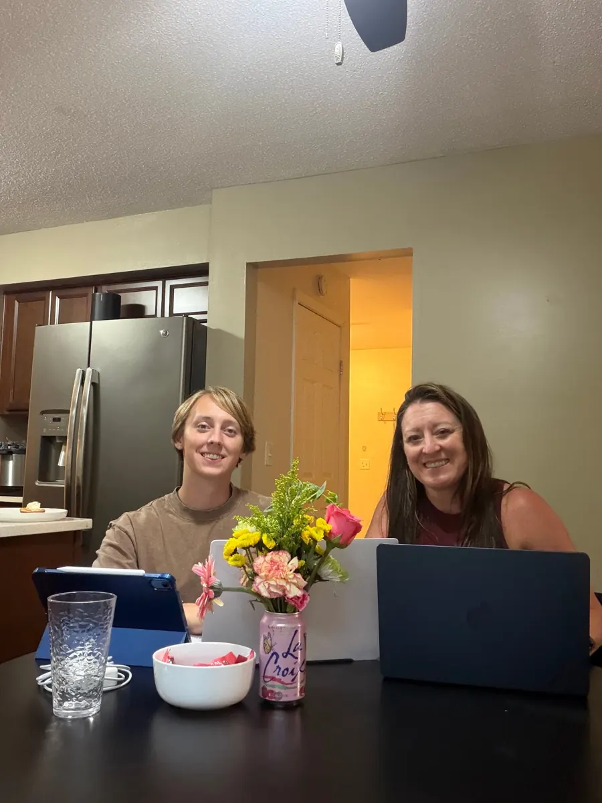

NowCurrent
CTO
Jennifer B Wesley PLLC · real estate
I direct technology for my family's real estate business: leads and clients, showings and remodels. The team is lean. I lead tech, a family member manages remodels, and a showings agent handles viewings.
How I decide
- Build when it's within reach and adds real value. Buy when a mature tool is worth the cost.
- No outside developers. I build or configure it myself.
- Small, connectable pieces (Zapier or n8n) over one big system.
- Client and financial data privacy, and backups, come first.
Already built
- Marketing website. Designed to be sellable and editable (Wix-compatible).
- PDF annotation app for marking up real estate documents.
RoadmapIn planning · not shipped
Tier 01
No-code wins
- 01.1Calendly for showings
- 01.2Google Drive / Notion for documents
- 01.3MLS syndication
Tier 02
Build
- 02.1Internal reporting dashboard the hub
- 02.2Post-showing feedback + auto follow-up
- 02.3Remodel budget tracker
Tier 03
Buy
- 03.1Lightweight CRM
- 03.2Smart locks